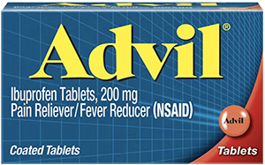
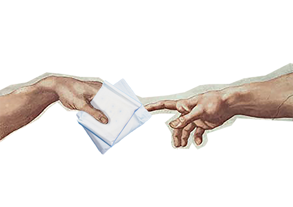

Waking up on the cold tiles of a bathroom floor was an all-too-common occurrence for me as a teenager. When it happened, I wasn’t working through a stomach bug—I had gotten my period. And it brought me to my knees every single time.
I paid attention in health class and listened to my mom, so I knew cramps were common with periods. But this pain was white hot, nauseating and unlike anything I had ever felt before. It happened every month like clockwork. I would sweat through my clothes and writhe in agonizing pain until my body finally succumbed to sleep. Eventually I would wake up and get ready for school. Nobody ever knew, except for my parents.
At some point I started missing classes, collapsing from the pain at work and my overall condition was getting worse with time. My family doctor said I ‘just had bad periods’ and tried to explain that what I was feeling was completely normal. What she didn’t know was that my mother had suffered from a chronic illness called endometriosis her entire life and the condition can be hereditary.
“It brought me to my knees everytime.”
According to the World Health Organization, endometriosis is “a disease where tissue similar to the lining of the uterus grows outside the uterus.” One in 10 people with a uterus have the condition and it takes an average of 10 years to get diagnosed, with the only method of clinical diagnosis being laparoscopic surgery (a keyhole surgery) and a biopsy of the endometriosis that was removed.
In the years following, I had multiple ultrasounds, tests and physical exams. I tried numerous medications, started going to psychotherapy, began physical therapy, attended clinical seminars to learn how to manage my pain, participated in surveys and research efforts and saw a slew of specialists.
As a result of my parent’s fierce advocacy for my health, I was ultimately diagnosed with a few conditions, including polycystic ovarian syndrome. This is when “the ovaries produce an abnormal amount of male sex hormones that are usually present in women in small amounts, which can create cysts on the ovaries.” However, some women with the disorder don’t have cysts at all.
I was also diagnosed with vaginismus, a painful condition where “recurrent or persistent involuntary spasm of the musculature of the outer third of the vagina” occurs, as well as pelvic floor dysfunction, which occurs when there’s “either too much tension on the pelvic floor muscles or not enough,” which contributes to pain.
And to the surprise of no one, I was also eventually diagnosed with endometriosis.
All of these conditions connect and intertwine in the reproductive system, begging the question: what came first, the chicken or the egg? 
The feeling of getting diagnosed with a chronic illness is akin to drowning underwater: every sound is muffled, your breath is shallow and the sights around you are blurry. People are talking to you, asking if you’re okay, but you can’t bring yourself to reply. You’re in your own universe. It’s a space where the ‘before’ and the ‘after’ can co-exist, even just for a minute, before you sacrifice one for the other.
I had known for quite some time that I probably had endometriosis, based on my symptoms, failed treatments and family history. So when I had surgery to get clinically diagnosed at 17 years old, I wasn’t scared or worried—I was ready.
The reassurance was the most peaceful day of my life.
Of course there was pain, but the overwhelming sensation of feeling validated and finally being at peace washed over me. I had the answers that I desperately longed for. I felt vindicated in my pain and what I had experienced for much of my life. For the first time, I had an explanation.
“You’re in your own universe. It’s a space where the ‘before’ and the ‘after’ can co-exist, even just for a minute, before you sacrifice one for the other.”
Despite accepting my body after learning about my diagnosis, I didn’t talk to anyone about it. I didn’t tell my teachers that I had surgery, I didn’t tell most of my friends what I was diagnosed with and I most definitely did not talk about it on the internet. I didn’t know how to, but I also didn’t want to. I wanted to appear as ‘normal’ as possible, existing in a ‘normal body,’ when the truth is, my life isn’t normal.
I have routines that the average person doesn’t have to consider, such as strict sleeping habits and writing in symptom journals. I take medications every day that most people can’t pronounce. I am an expert on medical terminology and procedures. This is my life and I got fed up with keeping these aspects of my existence hidden away.
After a stream of particularly horrendous specialist appointments, I hit a new level of defeat. I was tired of not only feeling more sick each day that passed, but I also grew tired of not talking about it. My friends suggested that I start a social media diary for friends and family to witness my journey as a method of expression. And in December 2020, the Instagram account @her_uterus was born.
Her Uterus is a multi-platform social media advocacy project, with the Instagram account being the main pillar/community resource with almost 17,000 followers. The account houses informational feed posts, daily updates on stories about what it’s like to live with chronic illness and humourous reels to convey information in an accessible way. 
One of the sentiments I hear the most is ‘I wish I was as confident in talking about my illness as you are.’ The truth is, prior to Her Uterus, I was quite the opposite. I adhered to societal taboos and sat silently as these conditions took over my life. I searched high and low across the internet to find people like me, or a community to belong to, without much avail. When I couldn’t sleep because of the pain, I would watch Lara Parker’s Youtube video, “Living With A Chronic Illness: Endometriosis” and sob. I didn’t see people who were like me talking about being chronically ill: people in university trying to make it to class; people dating who were learning how to explain this to their partner; or people living away from home for the first time.
So I decided to become that. It wasn’t so much about being confident or beyond stigma (although I wish I could claim that to be the case)—it was a lifeline for me, and I hope it can be that for someone else. Now I spend my days advocating for better reproductive healthcare, teaching others how to advocate for themselves in medical settings and breaking stigmas about periods, menstrual health and reproductive illness. It has been the greatest honour of my life.
“I’m learning to accept that my body is fighting to keep me alive the best way it knows how.”
Lately I’ve been more and more ill as each month passes by. I’ve experienced levels of pain that feel unfathomable. I’ve had an increase in testing, scans and hospital appointments. I’m still learning how to manage being a student, an employee, a friend, a daughter and a sister, all while being chronically ill. The difference this time, though, is that I have a community standing behind me, along with a strong support system. It’s for this reason that I know I will make it through every day, no matter the pain that I feel.
Being chronically ill is a full-time job that requires determination, a deep sense of belief in yourself and your pain, a thick skin and community to fall back on. It’s frustrating and a battle I have to win every day.
There are times where I’m resentful towards my body. I don’t want to always have to be strong. But as time goes on I’m learning to accept that my body is fighting to keep me alive the best way it knows how—which is a beautiful thought.